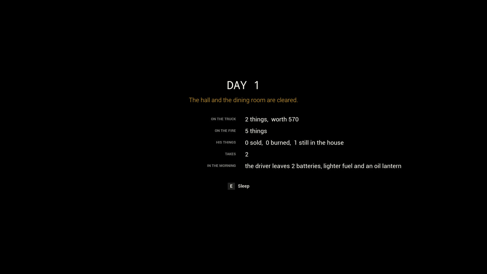
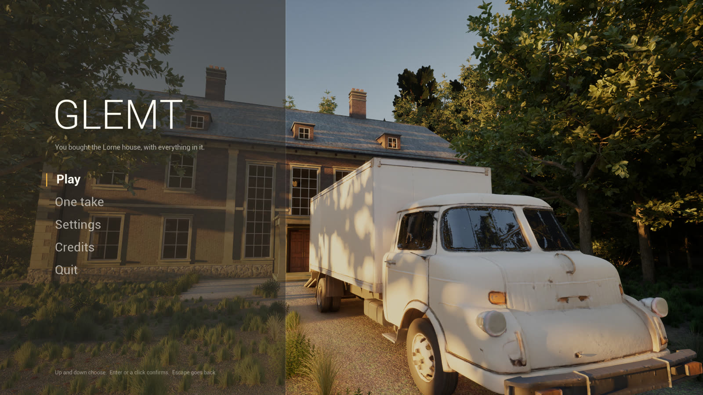
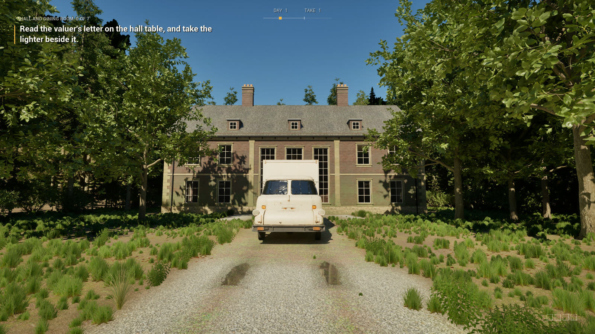
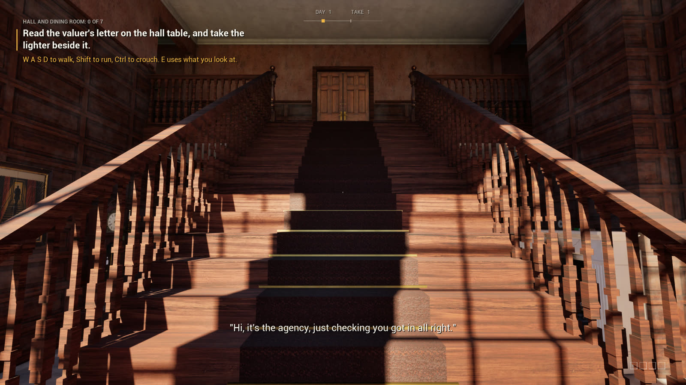
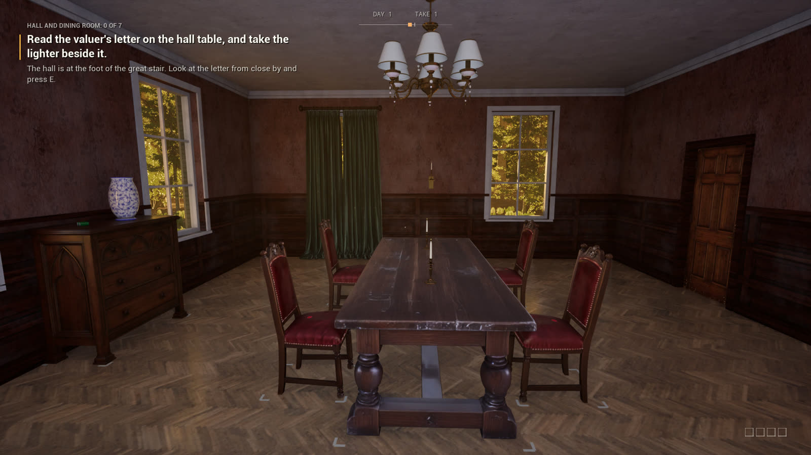
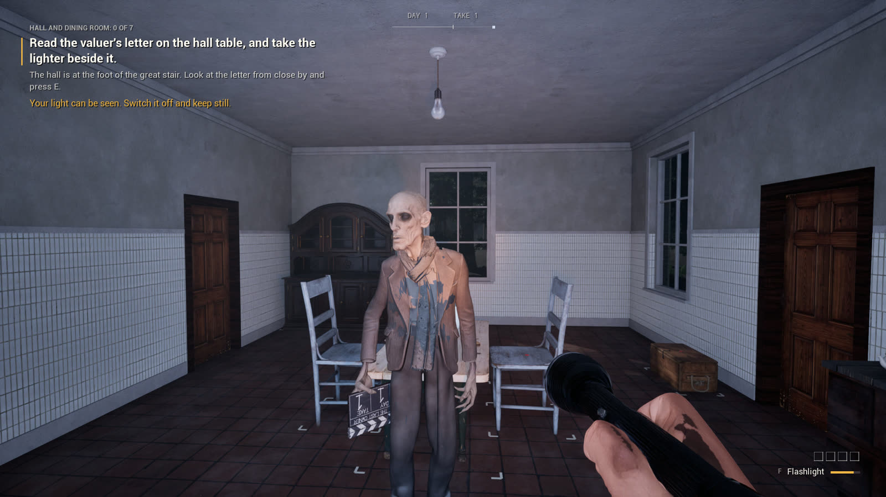
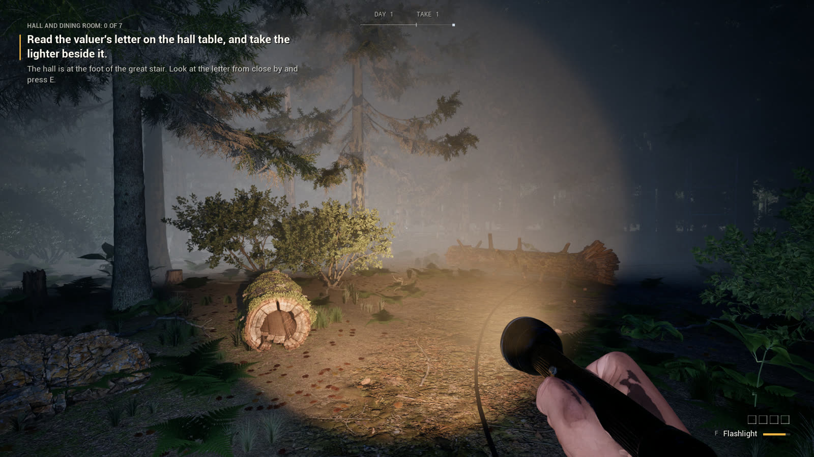
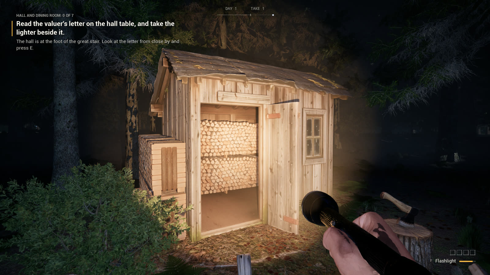
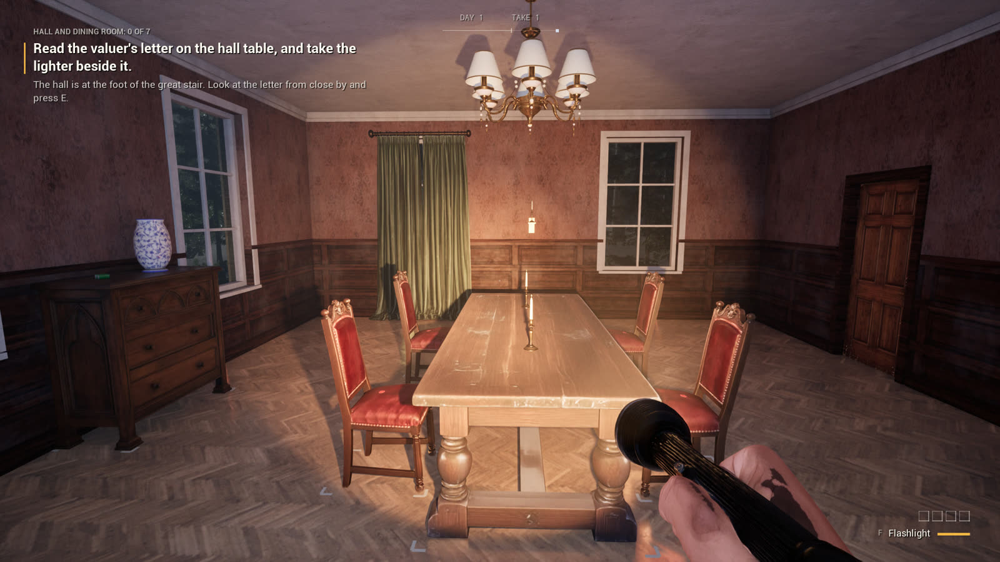
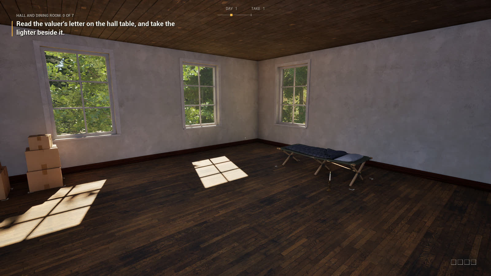

Day 2 Friday 13 November
The morning after: what one night of eight agents made, in plain words
11 pictures 5 failures 5 min read
The night in one paragraph
The developer went to bed at half past ten. The game then looked unfinished, and day one had only been played by a machine that jumps from thing to thing. Eight agents worked through the night, each on its own part, and one of them, the verifier, built, played, photographed and packaged the game every forty-five minutes and wrote down every fault it found. At six, day one plays from the title to bed and the day's tally, with the Director hunting after dark, in the packaged game started from its zip on a clean folder. It is not finished, and the list of what is wrong is below.
What plays now
- Day one, from the title to bed. The hall and the dining room, seven things to clear, the lighter beside the valuer's letter. The walking automaton, on the buyer's own feet at his speed, plays it like this: the letter and the lighter at 0:13, the first thing on the truck at 0:33, wood from the hut at 1:57, the fire lit at 2:51, the dead man's camera at 3:09, dusk at 4:35, "Places." at 5:20, the floor cleared at 5:29, the flash picture with him in it at 5:30, a death at 5:59, the waking, bed at 6:05. No stall anywhere.
- The packaged game. Three packages were made in the night and each was started as a stranger would start it, from its zip in an empty folder: the first picture after about five seconds, no network port opened, at most 4.9 GB of memory. The last one was played to the day's tally.
- The frame rate. On the development PC, with the graphics card to itself, day one ran at 154 to 169 frames a second with no frame longer than 24 milliseconds, with ray tracing on. It has not been measured on a mid-range card.


The verifier's verdict at the end of the night, retold: day one now carries the design's first ten minutes in six. The letter and the agent's message, the clock down the ramp, the walk through the forest along the film lamp's cable, his face at a window, the fire catching, "That stays.", dusk, "Places.", the flash picture that shows him, a death, the waking under the carved board, bed and the tally. What would lift it most now: a night that is really dark indoors, and something to touch in the bare room where the player wakes.
The best pictures of the night
Chosen by the verifier from its own pictures of the night; all are from the running game, the first two from the packaged one.















What the night changed, counted
Counted by the same script that counts the numbers on the front page, from the repository and the records, at the first entry of the night and at this one:
| 22:55 | 06:00 | |
|---|---|---|
| Lines of C++ game code | 18,794 | 23,547 |
| Rodin jobs (3D models and rigs) | 140 | 254 |
| Kinds of 3D model in the game | 97 | 221 |
| Pictures from the image model | 570 | 1,012 |
| Sound effects | 272 | 359 |
| Spoken lines | 136 | 169 |
| Pieces of music | 7 | 14 |
| Commits | 26 | 50 |
What went wrong in the night, and was put right
Each is told in full in the entries of 22:55, 00:30, 02:30 and 04:30:
- doors that held the buyer for minutes, and an automaton stuck for a minute and a half 90 centimetres up in the kitchen;
- hiding that "never worked", because our own test left the light on;
- five deaths in five minutes, and the line "He did not see me." after every one of them;
- a day one of fourteen things that took fifteen to twenty minutes, cut to two rooms;
- walls like camouflage in the first room, doll-like white hands, a modern digital camera in a house untouched since 1974;
- a second figure of the Director that came in white, then too pink, then right by day;
- the ground turned white like snow, and a lantern hand turned magenta;
- a packaged game without the forest's shrubs;
- a frame rate that fell to 83 when ray tracing came in, and came back;
- a build that nobody could build for half an hour, three minutes of shader compiling at every start, a lock held for forty minutes, twice, and test runs lost to a script that split its own settings.
What is still wrong, and where the developer will meet it




This morning
The developer plays day one from the newest package when he wakes, and his verdict decides the day. The plan for today is the one at the top of Day 2: a slice that looks finished by morning (pictures are above; he judges them), then day one at the quality bar by tonight, with the other three days behind it.